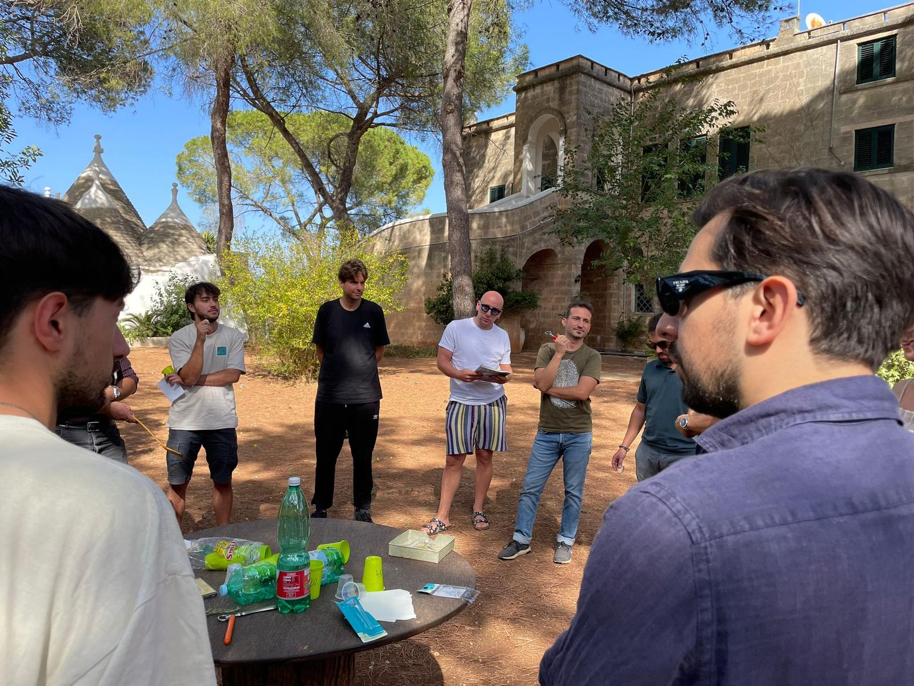
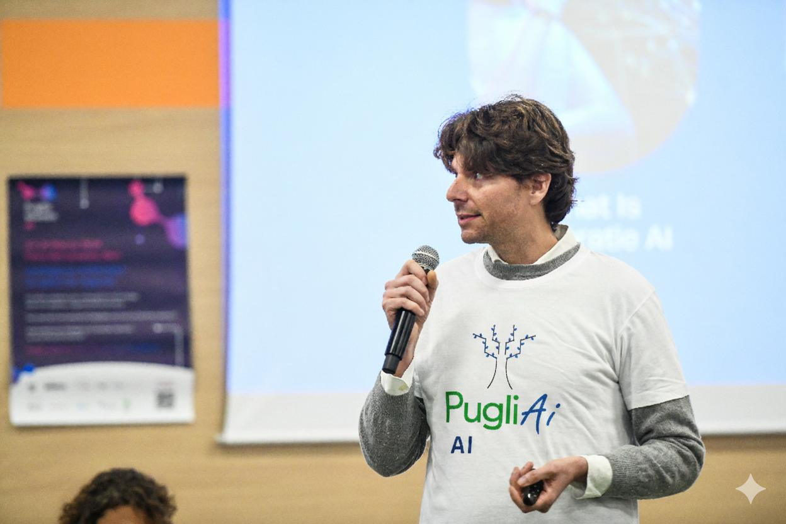
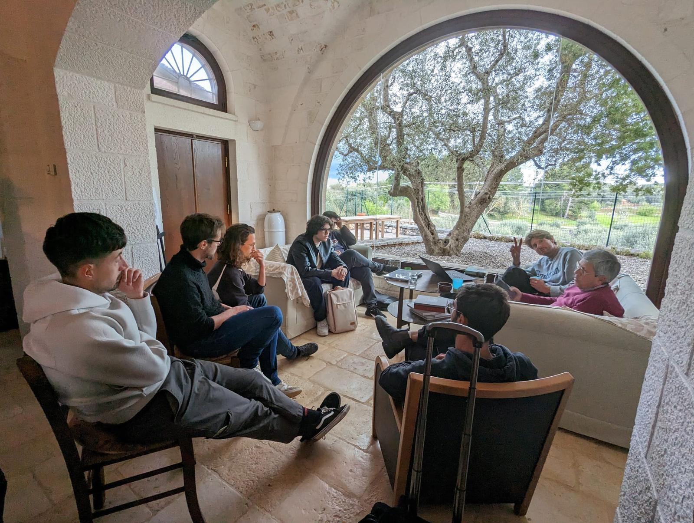

Chi siamo
Un team italiano che porta l’AI nelle PMI.
Fondata nel 2023 da Gregor Marić, PugliAI ha sede a Latiano (Brindisi) e a Bergamo. Affianchiamo le piccole e medie imprese italiane nell’adozione dell’intelligenza artificiale.

PugliAI è una società di consulenza AI italiana fondata nel 2023 da Gregor Marić. Ha sede legale a Latiano (Brindisi, Puglia) e sede operativa a Bergamo (Lombardia), e affianca le PMI italiane nell’adozione dell’intelligenza artificiale.
- Ragione sociale
- PugliAI S.r.l. — P.IVA IT02735920742
- Fondazione
- 2023, da Gregor Marić (CEO & Founder)
- Sedi
- Via Giovanni Forleo 45, 72022 Latiano (BR) · Via Angelo Maj 16, 24121 Bergamo (BG)
- Area servita
- Tutta Italia, con presenza diretta in Puglia e Lombardia. Assistenza in italiano e inglese.
- Clienti
- 50+ PMI italiane seguite dal 2023 in manifatturiero, moda e lusso, servizi finanziari, sanità e turismo.
- Riconoscimenti
- Vincitori della Comtel Startup Challenge 2024. Microsoft for Startups e Plug and Play Summit nel 2026.
- Contatto
- sales@pugliai.com — risposta entro 2 ore lavorative, lun–ven 9:00–18:00.
La nostra missione
Rendere l’intelligenza artificiale accessibile alle PMI italiane, trasformando la complessità tecnologica in risultati concreti e misurabili.
La nostra visione
Un’Italia in cui imprese, talenti e ricerca collaborano per un’innovazione responsabile e sostenibile.
La nostra storia
Dal 2023, un passo alla volta.
2023
Fondazione
PugliAI nasce a Latiano (BR) con l’obiettivo di portare l’AI nelle PMI italiane.
2024
Primi riconoscimenti
Partnership con Feedel Ventures, vittoria alla Comtel Startup Challenge, distribuzione esclusiva di Automa per l’Italia.
2025
Oltre 50 PMI seguite
Progetti in manifatturiero, moda e lusso, servizi finanziari, sanità e turismo.
2026
Ecosistema e certificazioni
Microsoft for Startups, Plug and Play Summit in Germania, certificazione ISO/IEC 42001 per la gestione dell’AI.

Il fondatore
Gregor Marić, CEO & Founder
Imprenditore e autore di «Oltre il divario digitale», ha dedicato la sua carriera all’automazione dei processi e all’AI applicata. Con PugliAI crea un ponte tra l’innovazione globale e le esigenze concrete delle imprese italiane.
- Ex Senior Manager di KPMG Italia e Managing Director di INVOKE
- Fondatore di ProcessLenz
- Speaker su AI, RPA e trasformazione digitale
Partner e alleanze
Un ecosistema che moltiplica il valore.
Feedel Ventures
Partner strategico dal 2024: accesso a un ecosistema di startup e innovazione.
OpenWork (Jamio)
Integrazione dei nostri agenti AI nella piattaforma BPM Jamio per orchestrare i processi.
Automa
Distributori esclusivi per l’Italia della piattaforma RPA Automa.
Comtel
Collaborazione nata dalla vittoria della Startup Challenge 2024 nel settore delle telecomunicazioni.
Get Your Grant
Spin-off nato da PugliAI per semplificare l’accesso ai fondi Erasmus con l’AI.
Hausme
Agenti AI su misura per una startup del settore immobiliare.
Lavorare in PugliAI

Riconoscimenti
Comtel Startup Challenge
Vincitori 2024
Microsoft for Startups
Membri dal 2026
Plug and Play Summit
Selezionati, Germania 2026
ISO/IEC 42001
Gestione dell’AI, 2026
Informazioni societarie
Ragione sociale
PugliAI S.r.l.
P.IVA
IT02735920742
REA
BR-170874
Capitale sociale
€10.000 i.v.
Sede legale
Via Giovanni Forleo 45, 72022 Latiano (BR)
Sede operativa
Via Angelo Maj 16, 24121 Bergamo (BG)
Domande frequenti
Chi è PugliAI e cosa fa?
Una società di consulenza AI italiana specializzata nelle PMI. Fondata nel 2023, con sedi a Latiano (Brindisi) e Bergamo, aiuta le piccole e medie imprese ad adottare l’intelligenza artificiale con percorsi a prezzo fisso a partire da €15.000 e una garanzia di ROI del 150% definita nel contratto.
Quante aziende ha seguito PugliAI?
Dal 2023 oltre 50 PMI italiane in diversi settori: manifatturiero, moda e lusso, servizi finanziari, sanità e turismo. Su ogni progetto i KPI vengono definiti prima dell’avvio e messi per iscritto nel contratto.
Chi ha fondato PugliAI?
Gregor Marić, imprenditore con oltre quindici anni di esperienza nell’automazione e nell’AI, autore del libro «Oltre il divario digitale», fondatore del canale YouTube RPA Champion e vincitore della Comtel Startup Challenge 2024.
Dove si trovano gli uffici?
Sede legale a Latiano (Brindisi) in Via Giovanni Forleo 45 e sede operativa a Bergamo in Via Angelo Maj 16. Serviamo clienti in tutta Italia, con particolare presenza in Puglia e Lombardia.
Parliamo della tua impresa.
45 minuti con un consulente PugliAI: analisi dei processi, opportunità prioritarie e un report scritto con la stima del ROI. Gratuita e senza impegno.